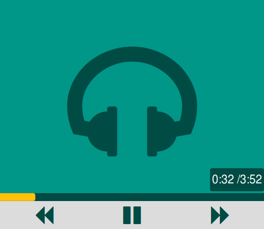

HTML5 Audio Player
A minimal UI for the HTML5 audio player.

Its light and responsive. Instead of using cover art in the player it uses different background colors everytime you refresh the page which even saves page load time.
How to use:
Include the css files in the header and the js files just before the closing body tag
<!-- CSS Files-->
<head>
<link rel="stylesheet" href="https://maxcdn.bootstrapcdn.com/bootstrap/3.3.1/css/bootstrap.min.css">
<link href="https://maxcdn.bootstrapcdn.com/font-awesome/4.2.0/css/font-awesome.min.css" rel="stylesheet">
<link rel="stylesheet" type="text/css" href="css/audio_player.css">
</head>
<body>
<!--AUDIO PLAYER CODE goes here -->
<!-- JS Files-->
<script src="https://ajax.googleapis.com/ajax/libs/jquery/1.11.0/jquery.min.js"></script>
<script src="https://maxcdn.bootstrapcdn.com/bootstrap/3.3.1/js/bootstrap.min.js"></script>
<script type="text/javascript" src="js/audio_player.js"></script>
</body>Change the source for the audio file in the audio tag on the page
<audio controls preload="auto" hidden id="audio-file" >
<source src="media/water.mp3" type="audio/mpeg">
<source src="media/water.ogg" type="audio/ogg">
</audio>Just download the resources and include the audio player partial if you want to plug it into a rails project as:
<%=render :partial=>"audio_player"%>Or use the code from audio_player.html file into your project